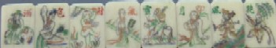
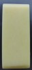
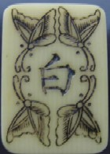
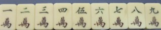
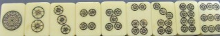
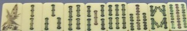
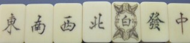

縦３㎝ 横2.2㎝、おまけに厚みは正16分（約1,2mm）という大振り象牙牌。読者Tさん所蔵の お宝牌だ。聞くところによれば、Ｔさんの曾祖父が明治〜大正期に仕事で中国へ行っていたときに入手したらしいとのこと。彫りの特徴から、たしかに1020年前後（大正９年前後）ころ
上海辺りで製造された牌と思われる。
それだけでもそれなりの価値はあるが、それだけのことなら ここで紹介するまではゆかなかったかもしれない。しかし他に珍奇牌というに十分な特徴がある。
まずは
１．花牌の字句が珍しい

花牌は二座（４枚１組で一座、計８枚）あり、一座ごとに４字熟語が彫られている。「春夏秋冬、梅蘭竹菊」というのが一般的だが、この花牌は「風花雪月、酒色財気」。この字句は珍しい。少なくともσ(-_-)は初見。
「風花雪月（ふうかせつげつ）」は日本流に云えば花鳥風月（かちょうふうげつ）。ただ日本の花鳥風月は美しいものの代表という雰囲気だが、中国では「美しいだけで中身は無い」などマイナスのイメージも持っているらしい。また「酒色財気」は、これも日本流に云えば「飲む（酒におぼれる）、打つ（バクチで財を失う）、買う（色（女遊び）はやめよ）」という意味。すなわち風花・・も酒色・・も生活の戒め的な意味を持った熟語が対（つい）になっているようだ。
２．竹の裏打ちが無い

むかし麻雀はトランプのような紙札だった。当然、堅いテーブルの上でゲームされる。紙牌が牛骨や象牙牌になっても、テーブルは堅い板のまま。アガったうれしさで牌を卓に叩きつけたりすれば欠けたりする。そこで牌を保護する目的で竹の裏打ちが付けられた。高価な象牙牌なのに、その竹の裏打ちが無い。ひょっとして
後から裏打ちをつけるつもりだったのか？。理由は分からないが、不思議不思議(?_?。
３．“白”が「文字入り＋胡蝶装飾」
白風 
竹の裏打ちがあろうとなかろうと、普通、“白”は何も彫られないで真っ白なまま。しかしそれでは寂しい？と、中国では“白”に額縁枠のような装飾をつけたりする。時には額縁無しで“白”という文字を彫ったりする。しかし
この牌には、ご丁寧に額縁も“白”という文字も両方彫られている。もちろん竹の裏打ちが無いので 何か彫ってなければ表か裏か分からなくなってしまう。というか
裏も表も真っ白では、白風を持っていることが相手に丸分かりとなってしまう(^-^；
となれば何か彫らなければいけないが、“白”の装飾枠が単なる額縁状の枠ではなく胡蝶になっている。胡蝶の装飾自体は他にも例があるが（「麻雀の歴史と文化」（麻雀博物館の図録）でいえば、No.37(p80)とかno.39(p84)の万子牌など）、珍しい部類に属することに間違いない。そこで所有者の同意を得て、この牌を白胡蝶牌と命名した次第。
４．その他




“白”以外の彫りは、いたってノーマル。筒子も こういう彫りは幾つも例がある。しかしこれはσ(-_-)が一番気に入ってる筒子の彫り方。
世の中にはクレオパトラからσ(-_-)の女房まで(^-^；、さまざまなタイプ というか レベルの美人がいる。女房がどのレベルかは秘密だが、この牌も思わず振り返ってみたくなるような美人の牌であることはたしか。
こう能書きを並べると、ひょっとして価値というか お値段みたいなものが気になるかもしれない。しかし例によって例のごとく 生臭いことはなるべく書かないことにしている....(>_<)
|